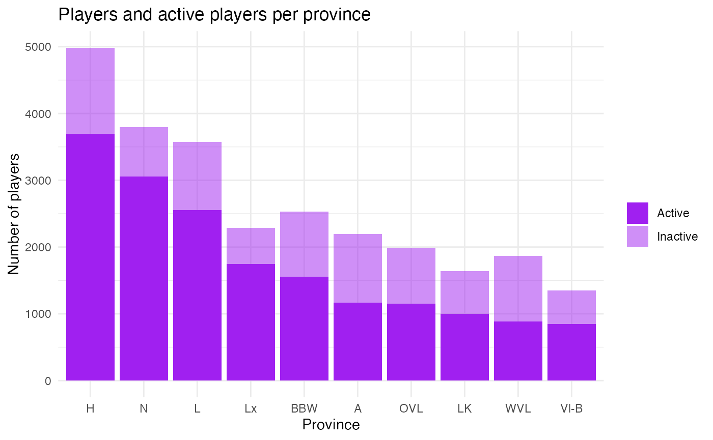
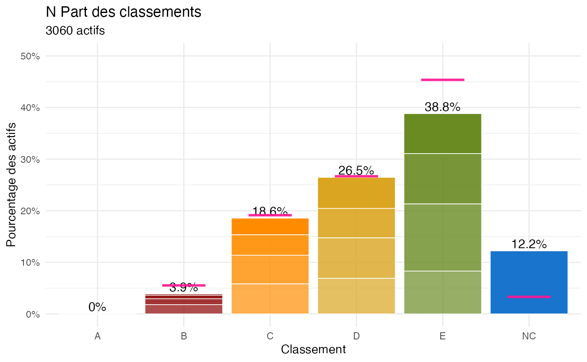
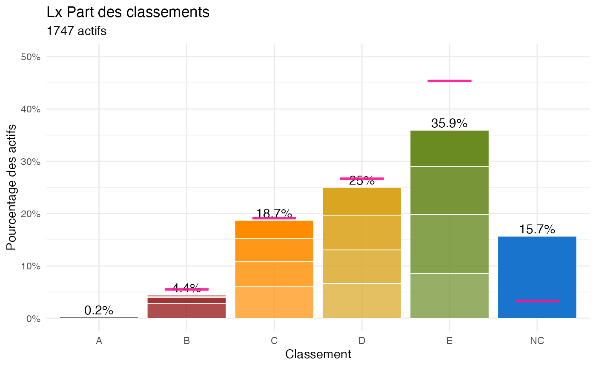
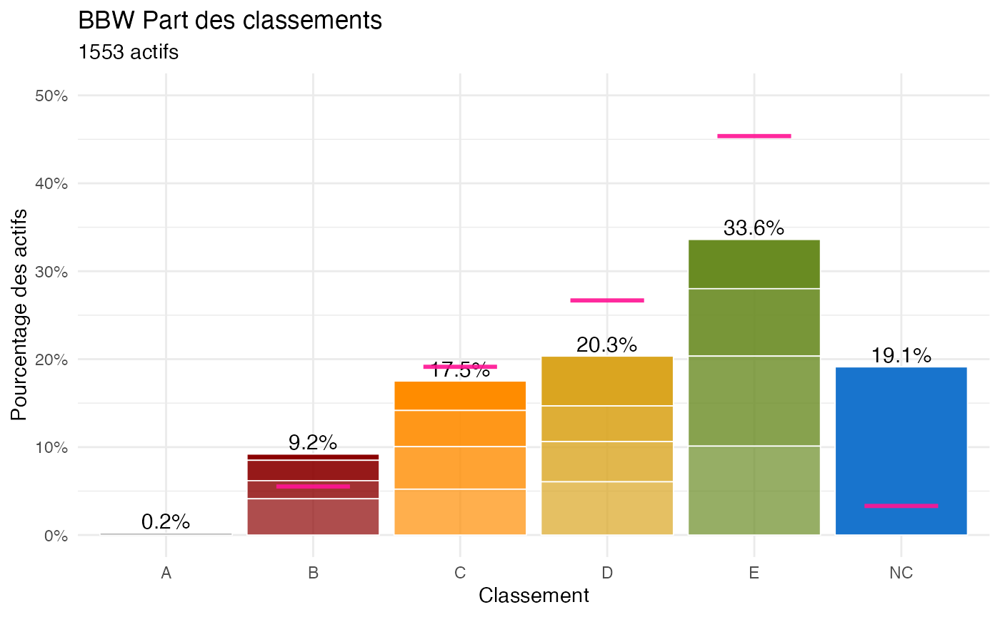
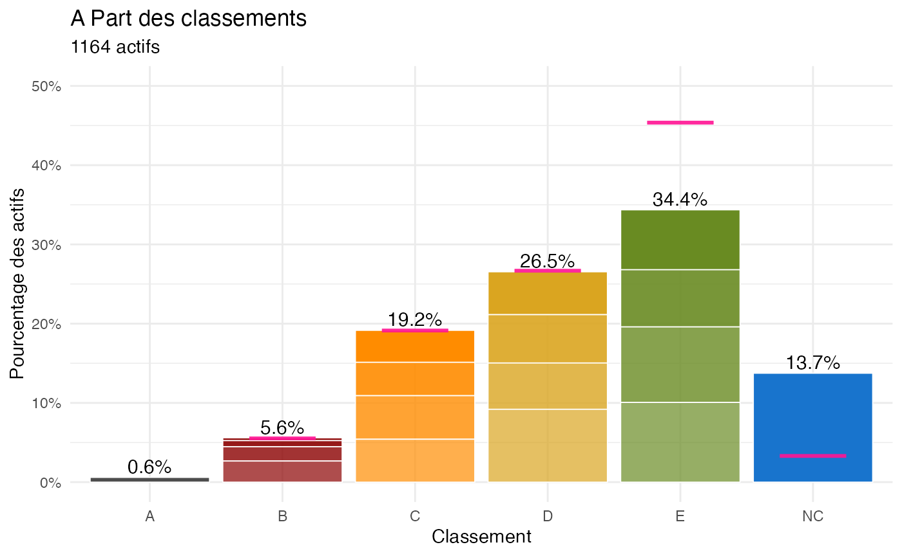
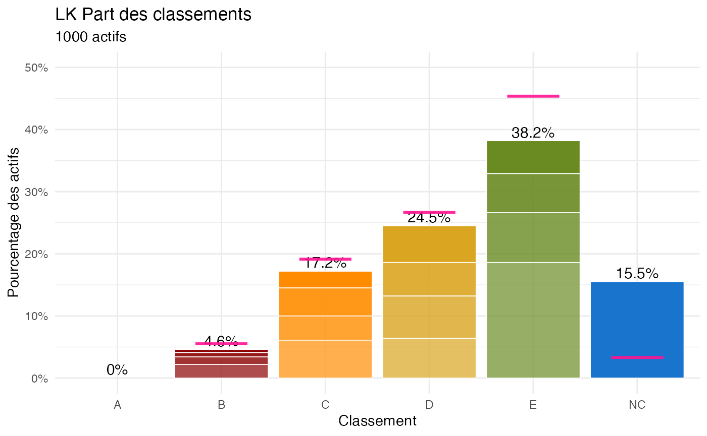
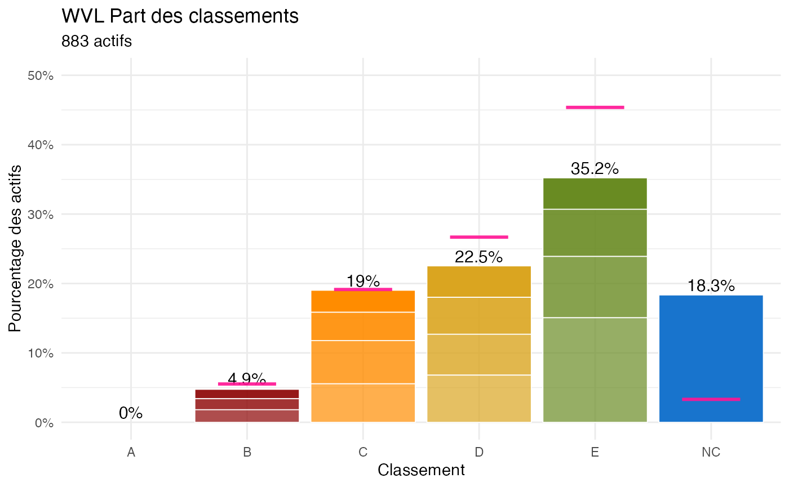
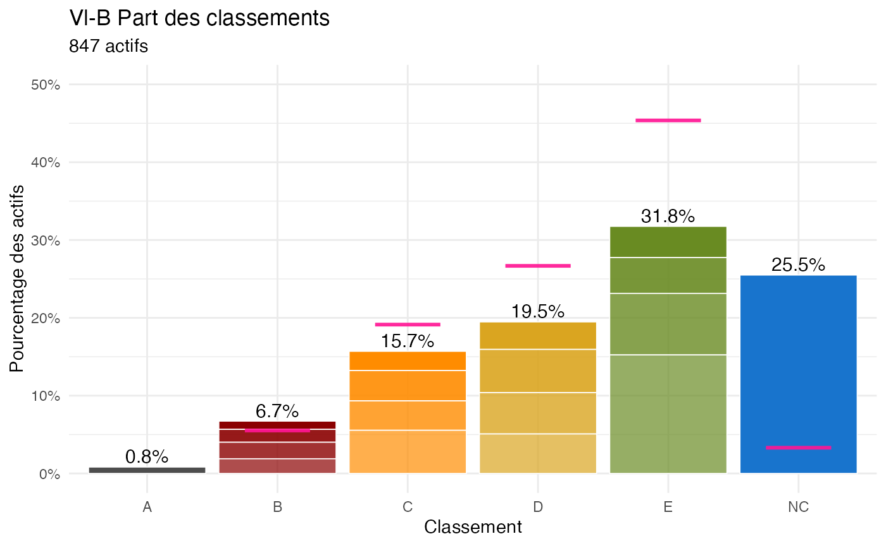
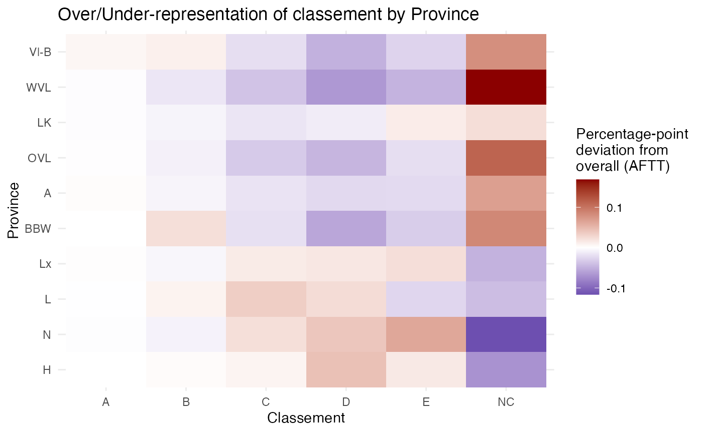
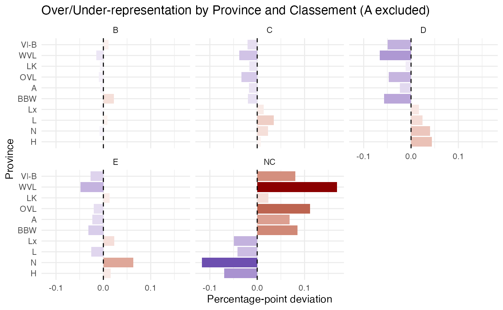

Distribution of players and actives across provinces
# Plot players actives and non-actives
df <- data.frame(
prov = names(table(players_m$prov)),
p = as.numeric(table(players_m$prov)),
a = as.numeric(table.actives.prov())
)
df <- df[order(df$a, decreasing = TRUE), ]
df$prov <- factor(df$prov, levels = df$prov)
prov_order <- df$prov
ggplot(data = df) +
geom_bar(aes(x = prov, y = p, alpha = "Inactive"),
stat = "identity", fill = "purple") +
geom_bar(aes(x = prov, y = a, alpha = "Active"),
stat = "identity", fill = "purple") +
scale_alpha_manual(
name = "",
values = c("Inactive" = 0.5, "Active" = 1)
) +
labs(x = "Province", y = "Number of players",
title = "Players and active players per province") +
theme_minimal()
graph.players.prov
Analysis of current percentage of each classement
Plot of the frequency of each classement for active players for each province. The pink bar indicates the percentage of players in each classement letter as of the AFTT grille (average, i.e. see share.m.B2toNC()).
lapply(as.character(prov_order), function(p) {
p.df <- players_m[players_m$prov == p, ]
graph.pct.classements(
p.df,
ylim_max = 0.5,
title = paste(p, "Part des classements")
) + geom.pct.classements.grille()
})## Best guess cumulated percentage based on means across columns of the provided grille. Excludes A's and B0 players as their number is fixed
## Best guess cumulated percentage based on means across columns of the provided grille. Excludes A's and B0 players as their number is fixed
## Best guess cumulated percentage based on means across columns of the provided grille. Excludes A's and B0 players as their number is fixed
## Best guess cumulated percentage based on means across columns of the provided grille. Excludes A's and B0 players as their number is fixed
## Best guess cumulated percentage based on means across columns of the provided grille. Excludes A's and B0 players as their number is fixed
## Best guess cumulated percentage based on means across columns of the provided grille. Excludes A's and B0 players as their number is fixed
## Best guess cumulated percentage based on means across columns of the provided grille. Excludes A's and B0 players as their number is fixed
## Best guess cumulated percentage based on means across columns of the provided grille. Excludes A's and B0 players as their number is fixed
## Best guess cumulated percentage based on means across columns of the provided grille. Excludes A's and B0 players as their number is fixed
## Best guess cumulated percentage based on means across columns of the provided grille. Excludes A's and B0 players as their number is fixed## [[1]]
graph.pct.classements.prov
##
## [[2]]
graph.pct.classements.prov
##
## [[3]]graph.pct.classements.prov
##
## [[4]]
graph.pct.classements.prov
##
## [[5]]
graph.pct.classements.prov
##
## [[6]]
graph.pct.classements.prov
##
## [[7]]graph.pct.classements.prov
##
## [[8]]
graph.pct.classements.prov
##
## [[9]]
graph.pct.classements.prov
##
## [[10]]
graph.pct.classements.prov
Over/under representation of a classement in a province compared to overall?
tab <- table(players_m$prov, players_m$classement_lettre)
prop_prov <- prop.table(tab, 1)
prop_all <- prop.table(colSums(tab))
diff <- sweep(prop_prov, 2, prop_all, "-")
df_long <- as.data.frame(as.table(diff))
colnames(df_long) <- c("prov", "classement.l", "diff")
df_long$prov <- factor(df_long$prov, levels = prov_order)
ggplot(df_long, aes(x = classement.l, y = prov, fill = diff)) +
geom_tile() +
scale_fill_gradient2(
low = "darkblue",
mid = "white",
high = "darkred",
midpoint = 0,
name = "Percentage-point\ndeviation from\noverall (AFTT)"
) +
labs(
title = "Over/Under-representation of classement by Province",
x = "Classement",
y = "Province"
) +
theme_minimal()
Or slightly cleaner maybe:
df_long2 <- df_long[df_long$classement.l != "A",]
ggplot(df_long2, aes(x = prov, y = diff, fill = diff)) +
geom_col() +
coord_flip() +
geom_hline(yintercept = 0, linetype = "dashed") +
facet_wrap(~classement.l) +
scale_fill_gradient2(
low = "darkblue",
mid = "white",
high = "darkred",
midpoint = 0,
guide = "none"
) +
labs(
title = "Over/Under-representation by Province and Classement (A excluded)",
x = "Province",
y = "Percentage-point deviation"
) +
theme_minimal()
There is not only more players in the French speaking provinces but also sytematically less NC in relative terms, indicating a stronger engagement in table tennis as a competitive sport.
Province season scores adjusted for classement structure
Compare total points per province to their expected values given the distribution of classements at the start of the season within each province. This corrects for compositional effects (e.g. differences in the proportion of NC players across provinces). The expected points are computed by assigning each player the average point value of their classement and aggregating by province. The difference between actual and expected points indicates whether a province is overperforming or underperforming relative to its classement structure.
active_noa <- players_m[
players_m$position_bis != "Inactive" &
players_m$classement_lettre != "A",
]
mean_class <- tapply(active_noa$points,
active_noa$classement,
mean,
na.rm = TRUE)
active_noa$expected_points <- mean_class[active_noa$classement]
active_noa$diff_points <- active_noa$points - active_noa$expected_points
prov_diff_mean <- aggregate(diff_points ~ prov, data = active_noa, mean)
prov_diff_mean## prov diff_points
## 1 A 22.520401
## 2 BBW -3.353309
## 3 H -10.989728
## 4 L -8.158971
## 5 LK 1.226117
## 6 Lx -14.762058
## 7 N -12.575752
## 8 OVL 22.760192
## 9 Vl-B 56.455347
## 10 WVL 33.750911Where we see the compositional effect seems to reappear. This is because 1 point in the lower classements more easily leads to a classement change than in the higher classements (by construction of the classements). This nonlinearity needs to be accounted for. One way is to standardize the deviations to the mean per classement, which gives us a sort of “z-score” of performance relative to the expected points for that classement. A second manner is to compute the rank within each classement, which is more robust to outliers and non-normality of points distribution.
active_noa$z_points <- ave(active_noa$points,
active_noa$classement,
FUN = function(x) (x - mean(x)) / sd(x))
prov_zscore_mean <- aggregate(z_points ~ prov, data = active_noa, mean)
prov_zscore_mean## prov z_points
## 1 A 0.204297810
## 2 BBW -0.026494142
## 3 H -0.095898549
## 4 L -0.072809040
## 5 LK -0.002166883
## 6 Lx -0.133239422
## 7 N -0.108150412
## 8 OVL 0.195464035
## 9 Vl-B 0.500463068
## 10 WVL 0.298582816
active_noa$p_points <- ave(active_noa$points,
active_noa$classement,
FUN = function(x) rank(x) / length(x))
prov_pscore_mean <- aggregate(p_points ~ prov, data = active_noa, mean)
prov_pscore_mean## prov p_points
## 1 A 0.5578350
## 2 BBW 0.4902112
## 3 H 0.4724433
## 4 L 0.4796219
## 5 LK 0.5031363
## 6 Lx 0.4612839
## 7 N 0.4674905
## 8 OVL 0.5575985
## 9 Vl-B 0.6334110
## 10 WVL 0.6083905The higher performance of provinces with less and lower classments is still there, suggesting a structural effect of the progression system rather than a true provincial effect. The only way out is to model points as a function of classement and average residuals or also including a province fixed effect:
#Note: classment is a factor but unordered to let the model decide on coef without assuming linearity with points.
# Refs for easier reading: "Hainaut" and "NC" as baselines:
active_noa$prov <- relevel(factor(active_noa$prov), ref = "H")
active_noa$classement <- relevel(factor(active_noa$classement), ref = "NC")
pts_model <- lm(points ~ classement, data = active_noa)
summary(pts_model)##
## Call:
## lm(formula = points ~ classement, data = active_noa)
##
## Residuals:
## Min 1Q Median 3Q Max
## -435.72 -73.27 -13.64 57.34 863.55
##
## Coefficients:
## Estimate Std. Error t value Pr(>|t|)
## (Intercept) 113.966 2.119 53.79 <2e-16 ***
## classementB0 2361.188 13.864 170.31 <2e-16 ***
## classementB2 2119.395 8.718 243.11 <2e-16 ***
## classementB4 1894.314 7.023 269.74 <2e-16 ***
## classementB6 1709.290 5.522 309.54 <2e-16 ***
## classementC0 1553.567 5.035 308.58 <2e-16 ***
## classementC2 1397.202 4.503 310.29 <2e-16 ***
## classementC4 1250.666 4.157 300.83 <2e-16 ***
## classementC6 1124.897 4.045 278.11 <2e-16 ***
## classementD0 993.535 4.009 247.81 <2e-16 ***
## classementD2 874.867 3.954 221.26 <2e-16 ***
## classementD4 759.273 3.892 195.07 <2e-16 ***
## classementD6 658.481 3.743 175.93 <2e-16 ***
## classementE0 536.579 3.866 138.80 <2e-16 ***
## classementE2 411.074 3.556 115.60 <2e-16 ***
## classementE4 272.797 3.340 81.67 <2e-16 ***
## classementE6 118.667 3.358 35.34 <2e-16 ***
## ---
## Signif. codes: 0 '***' 0.001 '**' 0.01 '*' 0.05 '.' 0.1 ' ' 1
##
## Residual standard error: 109.6 on 17607 degrees of freedom
## Multiple R-squared: 0.9603, Adjusted R-squared: 0.9603
## F-statistic: 2.663e+04 on 16 and 17607 DF, p-value: < 2.2e-16##
## Call:
## lm(formula = points ~ classement + prov, data = active_noa)
##
## Residuals:
## Min 1Q Median 3Q Max
## -424.66 -71.61 -13.70 56.97 803.07
##
## Coefficients:
## Estimate Std. Error t value Pr(>|t|)
## (Intercept) 99.358 2.658 37.378 < 2e-16 ***
## classementB0 2359.394 13.659 172.740 < 2e-16 ***
## classementB2 2118.586 8.593 246.538 < 2e-16 ***
## classementB4 1894.886 6.918 273.921 < 2e-16 ***
## classementB6 1714.017 5.446 314.716 < 2e-16 ***
## classementC0 1557.115 4.965 313.638 < 2e-16 ***
## classementC2 1400.937 4.440 315.506 < 2e-16 ***
## classementC4 1254.657 4.103 305.775 < 2e-16 ***
## classementC6 1129.184 3.990 282.980 < 2e-16 ***
## classementD0 999.261 3.960 252.321 < 2e-16 ***
## classementD2 879.408 3.904 225.256 < 2e-16 ***
## classementD4 763.976 3.843 198.785 < 2e-16 ***
## classementD6 662.235 3.695 179.214 < 2e-16 ***
## classementE0 542.357 3.820 141.969 < 2e-16 ***
## classementE2 417.415 3.517 118.691 < 2e-16 ***
## classementE4 277.628 3.300 84.137 < 2e-16 ***
## classementE6 117.391 3.313 35.429 < 2e-16 ***
## provA 33.799 3.641 9.284 < 2e-16 ***
## provBBW 8.258 3.279 2.518 0.011798 *
## provL 2.932 2.786 1.053 0.292557
## provLK 13.059 3.864 3.380 0.000727 ***
## provLx -3.606 3.140 -1.149 0.250745
## provN -1.605 2.643 -0.607 0.543549
## provOVL 34.581 3.654 9.463 < 2e-16 ***
## provVl-B 68.746 4.150 16.564 < 2e-16 ***
## provWVL 45.565 4.055 11.237 < 2e-16 ***
## ---
## Signif. codes: 0 '***' 0.001 '**' 0.01 '*' 0.05 '.' 0.1 ' ' 1
##
## Residual standard error: 107.9 on 17598 degrees of freedom
## Multiple R-squared: 0.9615, Adjusted R-squared: 0.9615
## F-statistic: 1.76e+04 on 25 and 17598 DF, p-value: < 2.2e-16
active_noa$residuals <- pts_model$residuals
prov_resid_mean <- aggregate(residuals ~ prov, data = active_noa, mean)
prov_resid_mean## prov residuals
## 1 H -10.989728
## 2 A 22.520401
## 3 BBW -3.353309
## 4 L -8.158971
## 5 LK 1.226117
## 6 Lx -14.762058
## 7 N -12.575752
## 8 OVL 22.760192
## 9 Vl-B 56.455347
## 10 WVL 33.750911Classement’s related coefficients shows expected mean point for each classement and their gaps show existing non-linearity. Those coefficients barely change when provinces are added.
Both residuals aggregation from the base model or the province coefficients in the fixed effect model confirm that, once we control for the classements structure, Flemish speaking provinces perform higher, i.e. more points than expected. In terms of provinces, the French speaking regions are barely different to the baseline (Hainaut).
Across multiple normalization strategies (fixed effects model, residuals of classement-points model, within-class z-scores, or rank-based scores), Flemish-speaking provinces systematically exhibit higher average performance indicators.
It goes in line with the first part which showed that French-speaking provinces tend to have a much higher share of activated players, suggesting a different sport ecosystem overall: more inclusive competition, i.e. more recreational players entering official or remaining active in competition in French speaking provinces. Solving the composition bias does not necessarily solves a potential selection bias.